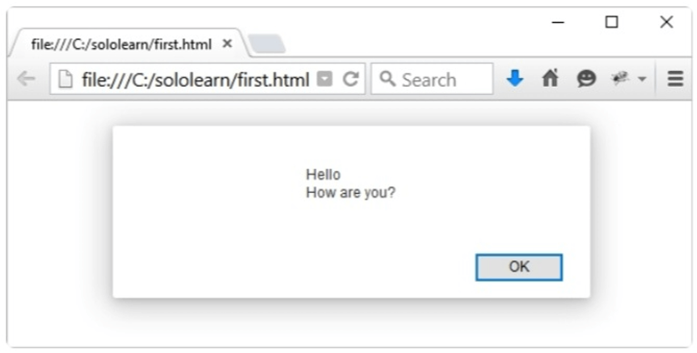
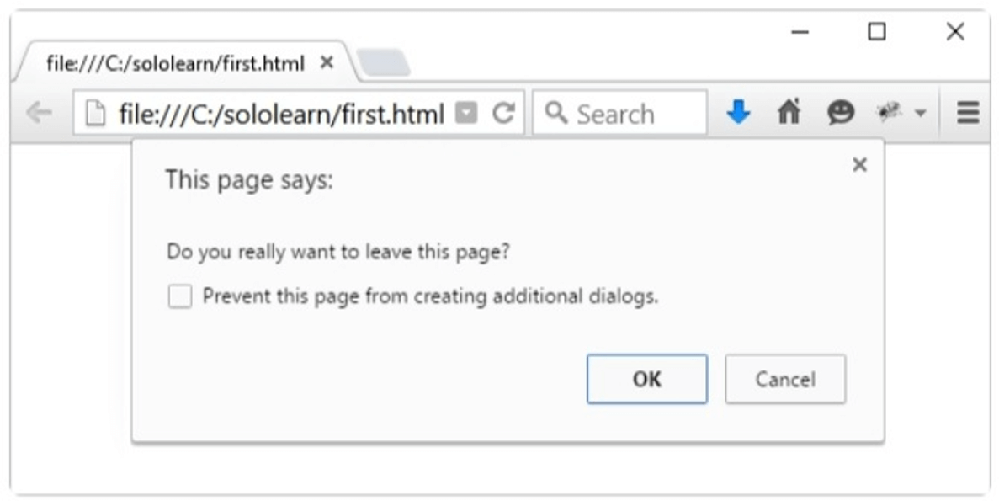

Una función en JavaScript es un bloque de código designado para ejecutar una tarea en particular.
Las principales ventajas de usar funciones son:
Reusar el código: Define el código una sóla vez, y úsalo muchas veces.
Usa el mismo código muchas veces con argumentos diferentes.
Una función en JavaScript es ejecutada cuando "algo" la invoca, o la llama.
Definiendo una función
Para definir una función en JavaScript, utiliza la palabra clave function, seguida por el nombre, seguido por un conjunto de paréntesis.
El código a ser ejecutado por la función es colocado dentro de llaves {}.
function nombre() {
//código a ser ejecutado
}
Los nombres de las funciones pueden contener letras, dígitos, guiones bajos, y signos de dólar (mismas reglas que para las variables).
Llamando una función
Para ejecutar una función, necesitas llamarla. Para llamar una función, comienza con el nombre de la función, luego continúa con los argumentos entre paréntesis.
Ejemplo:
function miFuncion() {
alert("Llamndo a una función!");
}
miFuncion();
Siempre recuerda finalizar la declaración con un punto y coma después de llamar la función.
Llamando funciones
Una vez que la función es definida, JavaScript permite llamarla cuantas veces lo desees.
function miFuncion() {
alert("¡Caja de alerta!");
}
miFuncion();
//"¡Caja de alerta!"
// algún otro código
miFuncion ();
//"Caja de alerta!"
También puedes llamar a una función utilizando esta sintaxis: miFuncion.call(). La diferencia es que cuando llamas a una función de este modo, estás pasando la palabra clave 'this' a una función. Aprenderás más sobre ello más adelante.
Code Coach
Funciones definidas por el usuario
Los parámetros de las funciones
Los parámetros de las funciones
Las funciones pueden tomar parámetros. Los parámetros de las funciones son los nombres listados en la definición de la función.
Esto permitirá ejecutar el código de la función utilizando los valores introducidos en los argumentos.
Utilizando múltiples parámetros con funciones
Múltiples parámetros
Puedes definir múltiples parámetros para una función separándolos con comas.
function miFunc(x, y) {
// algún código
}
En el ejemplo anterior se define la función miFunc que toma dos parámetros.
Múltiples parámetros
Los parámetros son utilizados dentro de la definición de la función.
function diHola(nombre, edad) {
document.write(nombre + " tiene " + edad + " años.");
}
Los parámetros de la función son los nombres que se muestran en la definición de la función.
Múltiples parámetros
Cuando llames a la función, coloca los argumentos en el mismo orden en el que los definiste.
function diHola(nombre, edad) {
document.write(nombre + " tiene " + edad + " años.");
}
diHola("John", 20);
Si pasas más argumentos de los que están definidos, éstos serán asignados a un array llamado arguments. Pueden utilizarse de la siguiente manera: arguments[0], arguments[1], ...
Code Coach
Múltiples parámetros
Múltiples parámetros
Después de definir la función, puedes llamarla tantas veces como necesites.
Las funciones en JavaScript no validan el número de argumentos recibidos.
Si una función es llamada con argumentos omitidos (menos de los declarados), los valores omitidos son tomados como undefined (indefinido), lo que indica que a una variable no le ha sido asignado un valor.
La declaración return
Retorno de una función
Una función puede tener una declaración return opcional. Esta se utiliza para retornar un valor desde una función.
Esta declaración es útil cuando hacemos cálculos que requieren un resultado.
Cuando JavaScript llega hasta una declaración return, la función detiene su ejecución.
Retorno de una función
Utiliza la declaración return para retornar un valor.
Por ejemplo, vamos a calcular el producto de dos números, y retornar el resultado.
function miFuncion(a, b) {
return a * b;
}
var x = miFuncion(5, 6);
// El valor de retorno se almacenará en x
Si no retornas ningún valor desde la función, la misma retornará undefined.
Retorno de una función
Otro ejemplo:
function sumarNumeros(a, b) {
var c = a + b;
return c;
}
document.write(sumarNumeros(40, 2));
La instrucción document.write() despliega el valor retornado por la función, el cual es la suma de los dos parámetros.
Code Coach
La declaración return
Alert, prompt, confirm
La ventana de alerta
JavaScript ofrece tres tipos de ventanas emergentes:
Ventana de alert (alerta),
Ventana de prompt (ventana de solicitud),
Ventana de confirm (ventana de confirmación).
Ventana de alerta
Una ventana de alerta es utilizada cuando quieres asegurarte de que la información llegue hasta el usuario.
Cuando aparece una ventana de alerta, el usuario debe hacer clic en OK para proceder.
La función alert(texto) toma un sólo parámetro, el cual es el texto a desplegar en la ventana emergente.
Ejemplo:
alert("Do you really want to leave this page?");
Resultado:
Para desplegar saltos de línea dentro de una ventana emergente, utiliza una barra inversa (\) seguida del carácter n.
alert("Hello\nHow are you?");
Resultado:

Ten cuidado cuando utilices ventanas de alerta, ya que el usuario sólo podrá continuar utilizando la página después de hacer clic en OK.
Ventana de solicitud
Una ventana de solicitud es utilizada usualmente para que el usuario ingrese un valor antes de ingresar a la página.
Cuando se despliega una ventana de solicitud, el usuario tendrá que hacer clic en OK o Cancel para poder proceder después de introducir el valor de entrada.
Si el usuario hace clic en OK, la ventana retorna el valor introducido. Si el usuario hace clic en Cancel, la ventana retorna null.
El método prompt(etiqueta, cadena) toma dos parámetros.
El primero es la etiqueta, que es el texto que quieres desplegar sobre el campo de texto.
El segundo es la cadena para desplegar dentro del campo de texto por defecto (opcional).
Ejemplo:
var user = prompt("Please enter your name");
alert(user);
Así se despliega la solicitud:
Cuando aparezca un cuadro de aviso , el usuario tendrá que hacer clic en "OK" o en "Cancel" para proceder tras introducir un valor de entrada. No utilices demasiado este método, ya que evita que el usuario acceda a otras partes de la página hasta que se cierre el recuadro.
Ventana de confirmación
Una ventana de confirmación es utilizada comúnmente para permitir al usuario validar o aceptar algo.
Cuando una ventana de confirmación emerge, el usuario debe hacer clic en OK o Cancel para poder proceder.
Si el usuario hace clic en OK, la ventana retornará verdadero. Si el usuario hace clic en Cancel, la ventana retornará falso.
Ejemplo:
var result = confirm("Do you really want to leave this page?");
if (result == true) {
alert("Thanks for visiting");
} else {
alert("Thanks for staying with us");
}
Resultado:

Este es el resultado cuando el usuario hace clic en OK:
Este es el resultado cuando el usuario hace clic en Cancel:
No utilices demasiado este método, ya que también evita que el usuario acceda a otras partes de la página hasta que se cierre el recuadro.